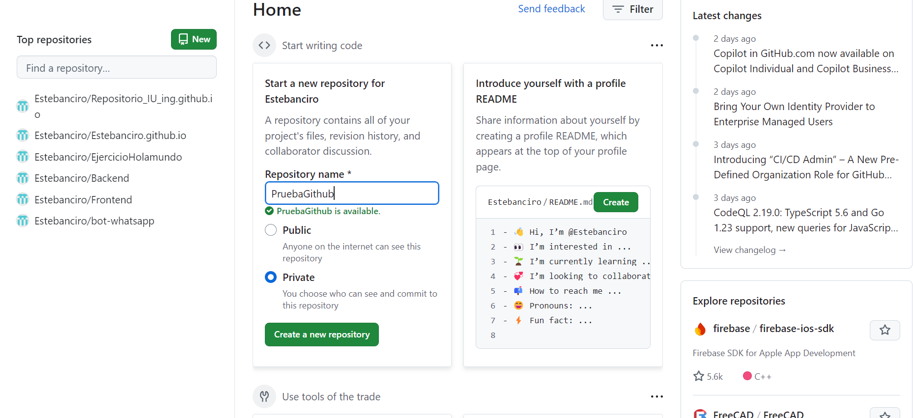

Cómo utilizar Git - Tutorial detallado
Introducción
Git es una herramienta de control de versiones distribuido que facilita a los desarrolladores el seguimiento de las modificaciones en su código y la colaboración en proyectos compartidos. En este tutorial, veremos cómo iniciar un repositorio en tu equipo, manejar ramas y sincronizarlo con un repositorio remoto en GitHub.
1. Instalación y Configuración de Git
1.1 Descarga e Instalación
Para comenzar a usar Git en un proyecto, primero necesitas inicializar un repositorio local. Esto convierte cualquier carpeta en tu máquina en un repositorio Git.
1.2 Configuración inicial
Después de la instalación, configura tu nombre de usuario y correo electrónico:
git config --global user.name "Tu Nombre"git config --global user.email "tu@email.com"2. Inicializacion del Repositorio localmente
Para comenzar a usar Git en tu proyecto:
- Abre la terminal en la carpeta del proyecto
- Ejecuta el comando:
git init
- Git creará un nuevo repositorio en esa carpeta.

2.1 Agregando Archivos al Staging Area
Para preparar los cambios para el commit:

git add .2.2 Realizando el Primer Commit
Para guardar los cambios en el repositorio:

git commit -m "Mensaje descriptivo del commit"3. Creación y Manejo de Branches
Las ramas en Git permiten trabajar en nuevas funcionalidades de forma aislada.
3.1 Creando una Nueva Rama

git branch nombre-de-la-rama3.2 Listando las Ramas

git branch3.4 Fusionando Ramas (Merge)
Para incorporar los cambios de una rama a otra:
git checkout rama-destinogit merge rama-origen4. Conectando con un Repositorio Remoto (GitHub)
4.1 Creando un Nuevo Repositorio en GitHub

4.2 Conectando el Repositorio Local con el Remoto
Copia la URL del repositorio remoto:
 Conecta tu repositorio local con el remoto:
Conecta tu repositorio local con el remoto:
git remote add origin URL-del-repositorio4.3 Subiendo Cambios al Repositorio Remoto
al ejecutar este comando, los cambios se subiran satisfactoriamente

git push origin mainRepositorio remoto
el repositorio remoto deberia de verse de la siguiente forma